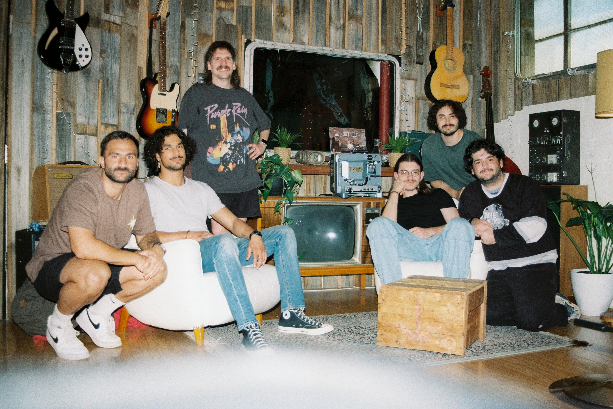

Designing AI Tools for Practising Musicians
A co-design case study with 13 practising musicians exploring how AI can be meaningfully integrated into composition and rehearsal practice.

// 01Overview
This project investigates how co-creative AI systems for music composition can be designed in collaboration with practising musicians. Rather than evaluating a finished AI tool, this work takes a co-design approach to identify the needs, values, and concerns of practising musicians regarding AI in music.
The research involves 13 musicians across two workshops and a two-week ecological evaluation, using the insights gathered to develop a musical AI variation tool alongside the musicians themselves.
// 02Research questions
- What role could co-creative AI meaningfully play in practising musicians' workflows?
- How do practising musicians perceive AI as collaborator vs. tool?
- What design features are required for AI systems to align with musicians' creative practices?
- How can co-design methodologies help uncover deeper needs beyond usability feedback?
// 03Approach
A co-design case study with 13 practising musicians across two workshops and a two-week ecological evaluation, iteratively developing a MusicBERT-based variation tool.
Workshop 1 · Perceptions of AI
Musicians composed a piece beforehand, then engaged in human-human and human-AI collaboration tasks using Music Transformer. Strong resistance emerged to framing AI as a collaborator; openness to AI as a variation tool.
Workshop 2 · Variation Tool Design
Musicians tested a prototype variation system, confirming variation is most valuable during ideation and should support control over pitch, rhythm, and harmony, and integrate into DAWs.
MusicBERT System Design
Based on workshop insights, a new system was developed using MusicBERT with Octuple encoding (8 note attributes). Users mask selected attributes; the model predicts replacements — more masking creates more variation.
Two-Week Ecological Evaluation
Six musicians used the system in their own creative environments, keeping reflective journals and concluding with a focus group. Outputs were primarily used as ideation sparks — filtered, refined, and chained iteratively.
// 05Key outcomes
AI Tool vs. AI Collaborator
Musicians strongly resisted AI being framed as a collaborator, preferring terminology that positions it as a creative tool or idea generator.
Ownership of the creative process
Musicians value maintaining authorship and decision-making authority, with AI supporting ideation rather than automating full compositions.
Variation as a productive model
Variation generation encourages exploration, disrupts habitual compositional patterns, and produces unexpected ideas without replacing initial authorship.
Terminology gap
A disconnect exists between MIDI-based machine representation and traditional music terminology — parameters should be translated into musician-friendly language.
Musical background influences needs
Drummers, electronic musicians, and traditionally trained musicians prefer different controls, indicating no universal musician profile for AI tool design.
DAW integration is critical
Integration into existing digital audio workstations and practical deployment considerations are critical for real-world adoption by practising musicians.